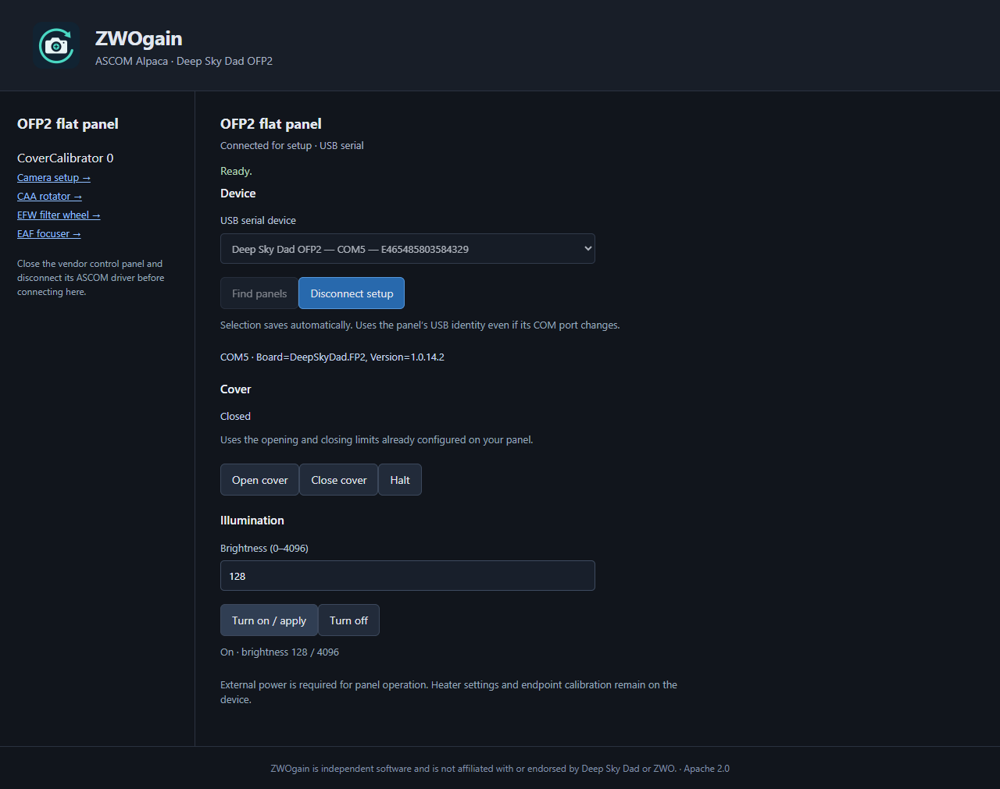

regain documentation
Deep Sky Dad OFP2
Control the motorized cover and flat-panel brightness through Alpaca, using a direct Rust USB serial driver.
The OFP2 uses regain-ofp2 and appears as CoverCalibrator device 0. No vendor ASCOM driver, SDK, or .NET runtime is required. NINA and Windows ASCOM applications connect through the Platform’s Alpaca discovery support.
Set up the panel
- Connect USB and the external power supply. Disconnect the vendor driver and other apps using the panel’s serial port.
- Start the Alpaca server with
regain-ofp2beside it. - Open
http://127.0.0.1:11111/setup/v1/covercalibrator/0/setup. - Choose Find panels, select the OFP2, and Connect for setup.
- Check cover clearance, then use Open, Close, Halt, and brightness 0–4096. Disconnect setup when finished and select the panel in your imaging client.
{kind=link}

Serial connection and profiles
Windows uses the built-in USB serial driver. Linux needs access to the panel’s serial port, commonly /dev/ttyACM*; macOS normally uses /dev/cu.usbmodem*. Do not replace the Windows driver with WinUSB/Zadig.
The selected USB serial and stable UUID are stored in cameras.ofp2.json beside the Alpaca camera profile. Multiple Alpaca clients share one exclusive worker; the last disconnect releases it. A missing, busy, or ambiguous device fails rather than selecting another panel.
Protocol and hardware evidence
The Rust implementation verifies the board identity and product type before sending movement commands. Discovery uses read-only probes. Connecting does not change illumination, heater settings, or motion limits.
The OFP2 playbook records the serial protocol, Rust API, worker commands, and validation. The hardware evidence is kept alongside the code.